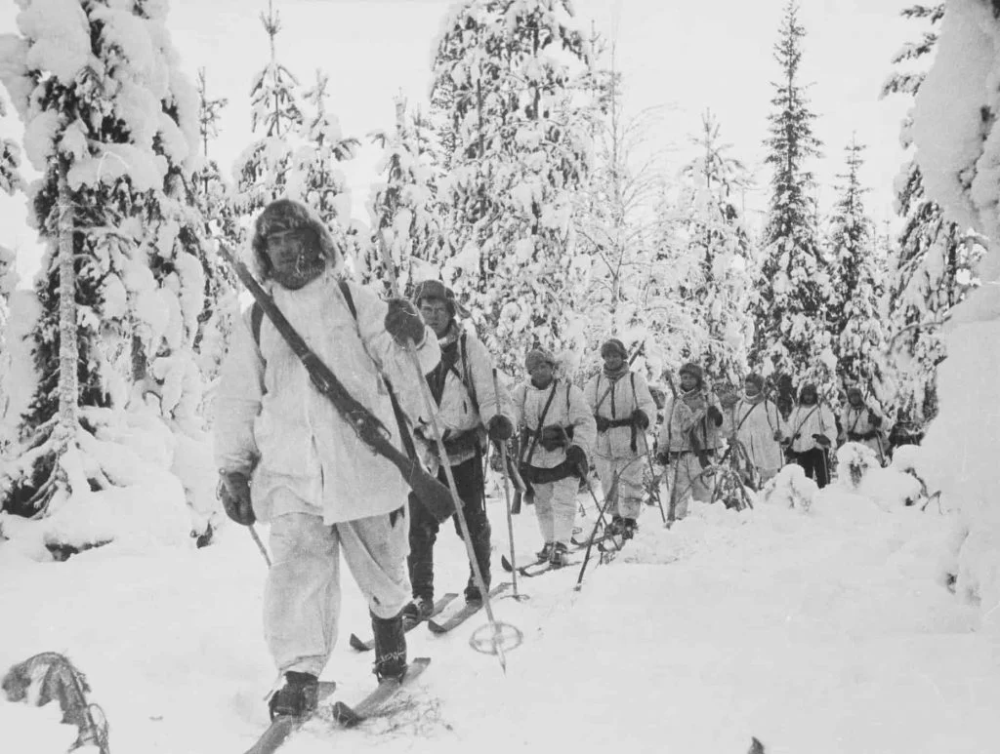
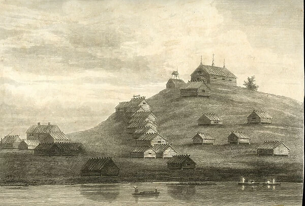

Home
Food
History
Traveling
Finland was first settled around 9000 BC after the last Ice Age. During the Stone Age, various cultures emerged, distinguished by different styles of ceramics. The Bronze Age and Iron Ages were marked by contacts with other cultures in Fennoscandia and the Baltic region. From the late 13th century, Finland became part of Sweden as a result of the Northern Crusades. In 1809, as a result of the Finnish War, Finland became part of the Russian Empire as the autonomous Grand Duchy of Finland. During this period, Finnish art flourished and the idea of independence began to take hold. In 1906, Finland became the first European state to grant universal suffrage, and the first in the world to give all adult citizens the right to run for public office. Following the Russian Revolution of 1917, Finland declared its independence from Russia. In 1918 the young nation was divided by the Finnish Civil War. During the World War II, Finland fought against the Soviet Union in the Winter War and the Continuation War, and later against Nazi Germany in the Lapland War. As a result, it lost parts of its territory but retained its independence.
Finland remained a largely agricultural country until the 1950s. After World War II, it industrialised quickly and established an advanced economy, with a welfare state built on the Nordic model. This allowed the country to experience overall prosperity and high per capita income. During the Cold War, Finland officially embraced a policy of neutrality. Since then, it has become a member of the European Union in 1995, the Eurozone in 1999, and NATO in 2023. Finland is a member of various international organisations, such as the United Nations, the Nordic Council, the Schengen Area, the Council of Europe, the World Trade Organization, and the Organisation for Economic Co-operation and Development (OECD). The nation performs exceedingly well in national performance metrics, including education, economic competitiveness, civil liberties, quality of life, and human development.


